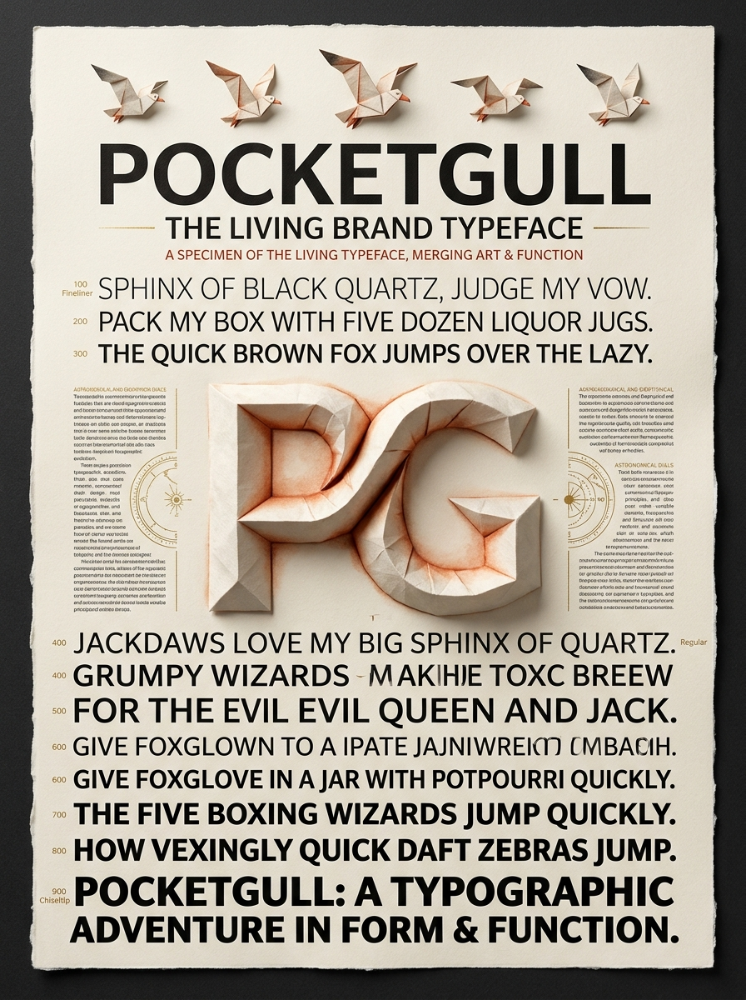
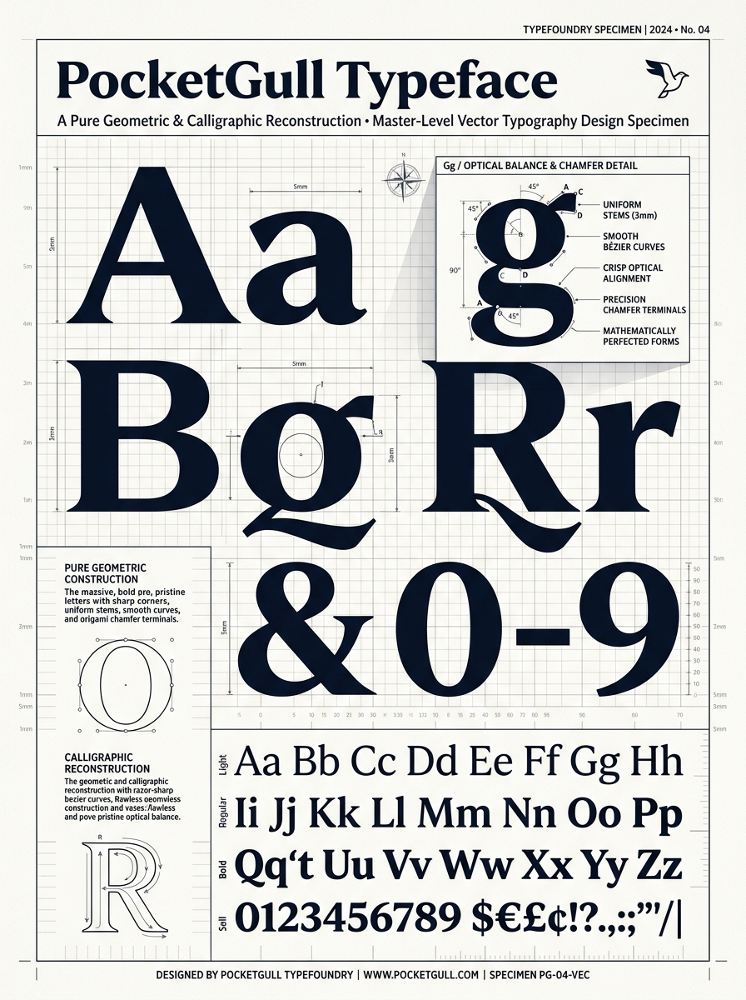
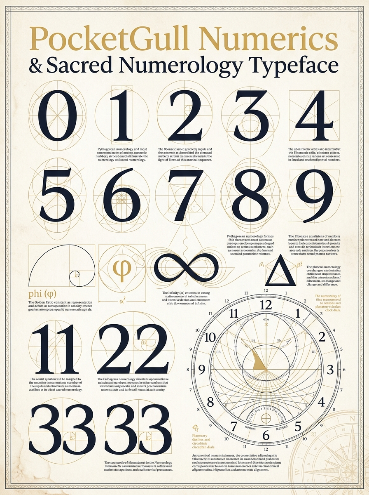
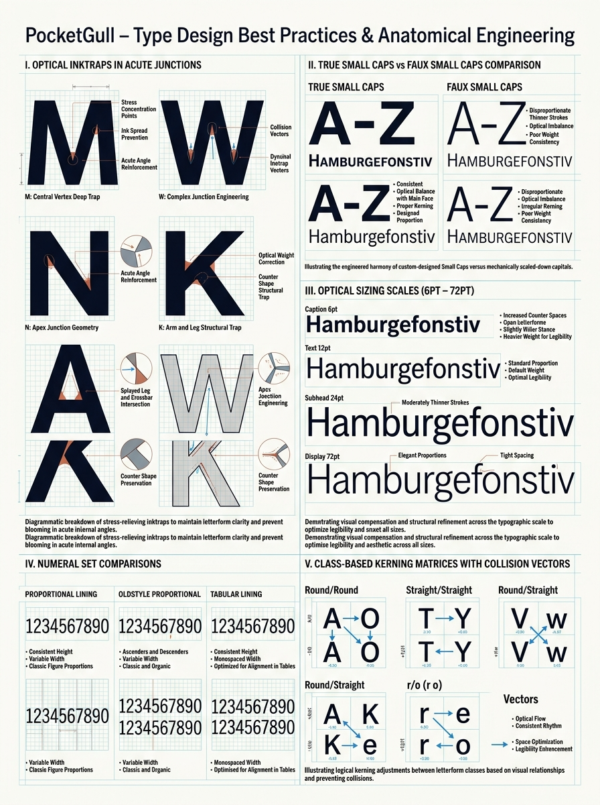
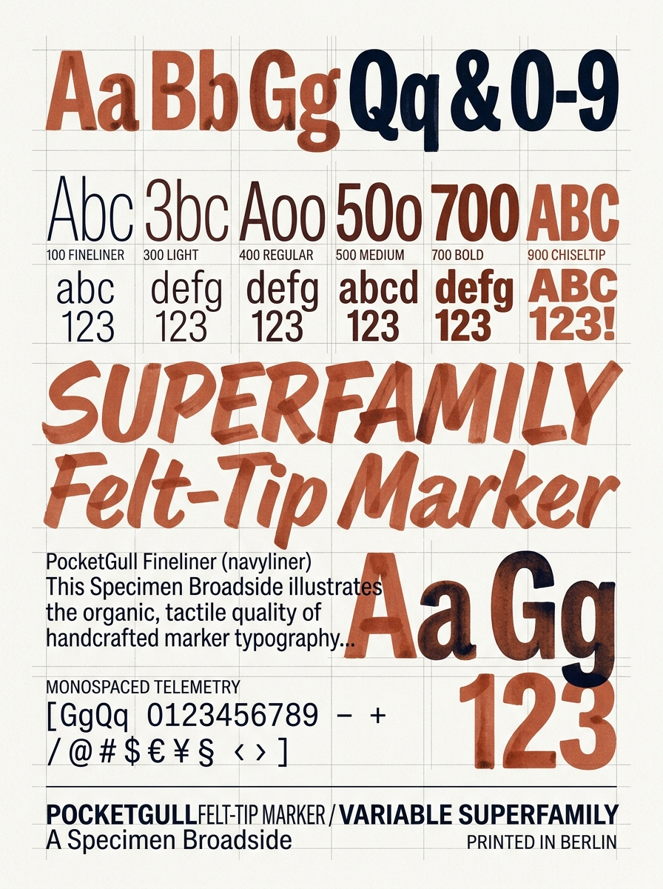
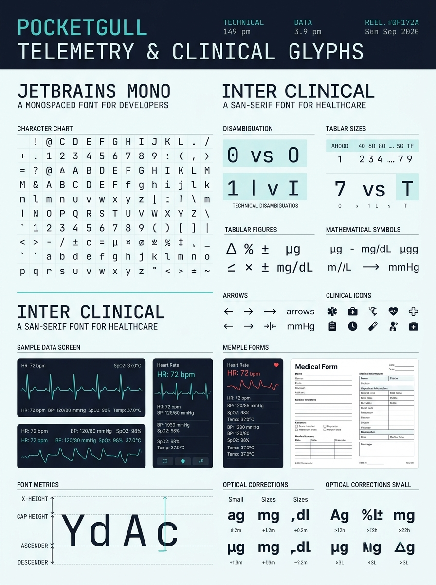

Parametric Variable Typefoundry v3.0
Crafted in Felt Marker.
Engineered with Vector Precision.
An open-source handcrafted typeface superfamily designed for high-impact branding, sacred numerology, and zero-error clinical telemetry.
Font Weight
700
Optical Size
36pt
Slant (Tilt)
0°
Font Size
48px
PocketGull: Pure Vector Geometry & Sacred Numerology. 120/80 mmHg · 98.6 bpm · φ = 1.618
Slashed Zero (0 vs O)
Hooked l (1 vs l)
Serifed I (I vs l)
Tabular Vitals
Small Caps
Master Typographic Broadsides
Museum-grade architectural and clinical specimen posters.

The Grand Masterpiece
3D origami paper relief sculpture & variable weight cascade.

Precision Vector Blueprint
Pure mathematical Bezier splines and 45° origami chamfers.

Sacred Numerology & Time
Golden ratio (φ), master numbers (11, 22, 33), and circadian dials.

Type Design Best Practices
Optical inktraps, true small caps, and class-based GPOS kerning.

Felt-Tip Marker Superfamily
Organic capillary ink-bleed and tactile broad-nib weights.

Clinical Telemetry & ICU Engine
Zero-error character disambiguation and streaming EHR vitals.
The 5 Origami Brand Archetypes
Character identities shaping the clinical and mathematical intelligence of the system.

The Navigator
Kraft Sand · Triage & Compass
The Chronicler
Golden Amber · Time-Series Vitals
The Statistician
Azure Blue · Epistemology & RoB 2
The Scholar
Lavender · Literature & Cochrane
The Explorer
Ice Frost · 3D Anatomy & Multimodal
Download Font Binaries
Free under SIL Open Font License 1.1 (OFL). Ready for Adobe Express, macOS, Windows, and Web.
| Font Family | Format | Weight / Class | Action |
|---|---|---|---|
| PocketGull Variable | TrueType Variable (`.ttf`) | `100` $\rightarrow$ `900` + `opsz` + `slnt` | Download .ttf |
| PocketGull Variable Web | WOFF2 Variable (`.woff2`) | `100` $\rightarrow$ `900` (Ultra-light 38KB) | Download .woff2 |
| PocketGull Numerics | TrueType (`.ttf`) | Regular 400 (Sacred Geometry & Dials) | Download .ttf |
| PocketGull Bold Display | TrueType (`.ttf`) | Bold 700 (Master Wordmark Display) | Download .ttf |
| PocketGull Fineliner | TrueType (`.ttf`) | Regular 400 (0.3mm Fine Felt Pen) | Download .ttf |
| PocketGull Chiseltip | TrueType (`.ttf`) | Black 900 (45° Chamfer Cut Marker) | Download .ttf |
| PocketGull Mono Telemetry | TrueType (`.ttf`) | Monospace 400 (600 UPM Tabular Figures) | Download .ttf |